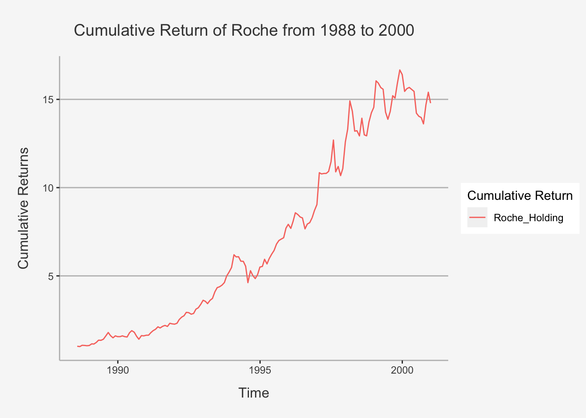
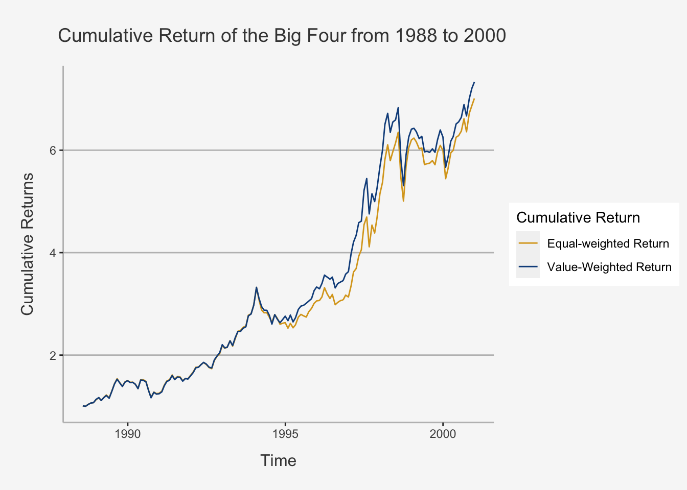
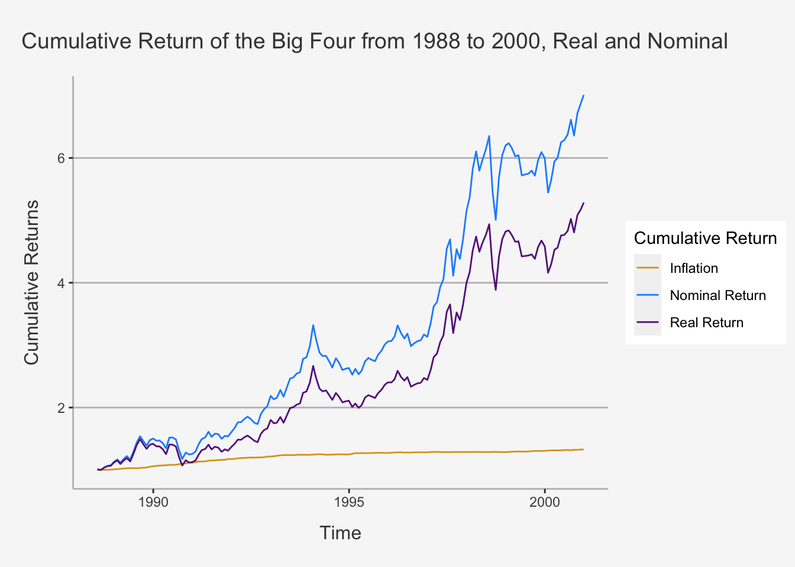
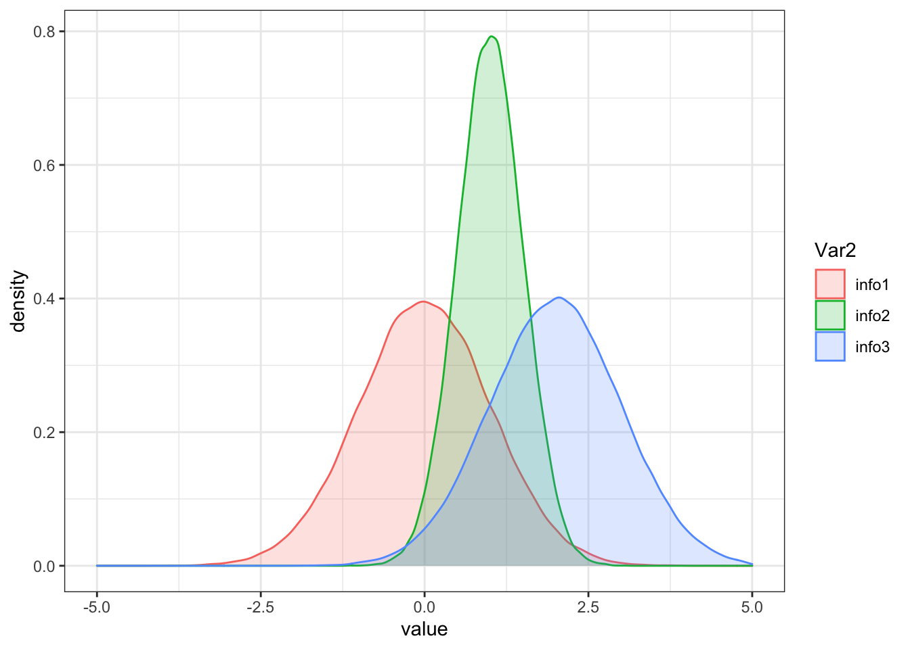

Chapter 4 Chapter 2: Risk and Return
The second week covers Risk and Return, one of the fundamental aspects of asset pricing. Therein, we cover the theoretical aspect behind portfolio theory, what risk metrics are, how to use performance measures, as well as how to visualise asset returns over time. Besides presenting application steps using pre-defined functions, we also cover how to calculate the metrics considered manually using matrix algebra to enhance your understanding of the respective empirical steps.
4.1 The time-series of Returns - Transformations in R
Before we dig into the actual analysis, we need to clarify a common set-up for analysing time-serie returns.
Note that security analysis is always given within a time-series format. As we want to calculate returns and risk structures, we need to incorporate time-series since we want to compare security or portfolio behaviour over time. That is, we want to have a frame of reference and state how a security develops compared to that frame (e.g. the return from 2015 to now to assess what profit a portfolio has delivered).
In order to use time-series in securitiy analysis, we first need to modify the data set into a time-series format. We do so by using the package xts. Therein, we follow these steps to transform and use the concept of time-series within R:
# Load in the dataset with your path
A1 <- read.csv("/Users/nikolasanic/Desktop/Master UZH/Data/A1_dataset_01.txt", header = T, sep = "\t", dec = '.')
# Look the data set to get a better overview
head(A1)## Date ABB Actelion Adecco Alcon Alusuisse Baloise Ciba_SC Ciba_Geigy_I Ciba_Geigy_PS Clariant Compagnie_Financiere_Richemont
## 1 1988-06-30 5.294 NA 155.845 NA NA NA NA 668.55 305.75 NA NA
## 2 1988-07-29 4.982 NA 157.232 NA NA NA NA 649.82 301.81 NA NA
## 3 1988-08-31 5.049 NA 162.319 NA NA NA NA 648.83 315.62 NA NA
## 4 1988-09-30 5.527 NA 171.476 NA NA NA NA 668.55 327.45 NA NA
## 5 1988-10-31 5.928 NA 175.730 NA NA NA NA 685.31 353.10 NA NA
## 6 1988-11-30 6.161 NA 171.080 NA NA NA NA 534.45 398.47 NA NA
## Credit_Suisse_Group Credit_Suisse_Holding Elektrowatt EMS_Chemie_Holding Geberit Georg_Fischer Givaudan Holcim Jacobs_Suchard Julius_Baer_Group
## 1 NA 76.45 296.70 NA NA NA NA 98.75 7890 NA
## 2 NA 77.05 294.23 NA NA NA NA 97.82 7700 NA
## 3 NA 75.54 286.81 NA NA NA NA 97.36 7500 NA
## 4 NA 80.83 279.89 NA NA 184.400 NA 98.29 7750 NA
## 5 NA 87.03 292.75 NA NA 179.771 NA 99.77 7680 NA
## 6 NA 81.28 274.94 NA NA 169.741 NA 95.04 6850 NA
## Kudelski LafargeHolcim Lonza_Group Merck_Serono Nestle_I Nestle_PS Nobel_Biocare_Holding Novartis_I Novartis_N OC_Oerlikon_Corporation
## 1 NA NA NA NA 834.87 4.103 NA NA NA 17.294
## 2 NA NA NA NA 817.19 4.006 NA NA NA 16.325
## 3 NA NA NA NA 816.69 4.123 NA NA NA 19.715
## 4 NA NA NA NA 859.42 4.133 NA NA NA 21.444
## 5 NA NA NA NA 873.17 4.264 NA NA NA 20.960
## 6 NA NA NA NA 675.26 5.829 NA NA NA 21.790
## Pargesa_Holding Partners_Group Roche_Holding SAirGroup Sandoz_PS Sandoz_N Schweizerische_Volksbank_StN Schweizerische_Volksbank_ST SGS Sika
## 1 30.672 NA 11.166 NA 467.50 NA 158.67 NA NA NA
## 2 31.068 NA 11.329 NA 491.85 NA 155.73 NA NA NA
## 3 31.661 NA 11.119 NA 478.21 NA 154.75 NA NA NA
## 4 33.541 NA 11.935 NA 481.13 NA 152.79 NA NA NA
## 5 32.057 NA 11.842 NA 479.19 NA NA NA NA NA
## 6 30.276 NA 11.655 NA 411.98 NA NA NA NA NA
## Societe_Internationale_Pirelli Sulzer Swiss_Bank_I Swiss_Bank_PS Swiss_Bank_N Swiss_Life_Holding_I Swiss_Life_Holding_N Swiss_Re Swissair Swisscom
## 1 222.89 NA 351 292 NA NA NA 16.554 1068.24 NA
## 2 217.00 NA 380 299 NA NA NA 16.637 1125.22 NA
## 3 212.80 NA 357 291 NA NA NA 16.802 1082.49 NA
## 4 207.75 NA 375 303 NA NA NA 16.940 1101.48 NA
## 5 224.57 NA 391 313 NA NA NA 17.518 1125.22 NA
## 6 209.43 NA 363 296 NA NA NA 19.006 1035.01 NA
## Syngenta Synthes The_Swatch_Group_I The_Swatch_Group_N Transocean UBS_N UBS_PS UBS_I Winterthur Zurich_Insurance_Group_I Zurich_Insurance_Group_N
## 1 NA NA NA NA NA NA 112.5 610.87 955.02 1406.93 NA
## 2 NA NA NA NA NA NA 116.0 648.19 972.96 1397.30 NA
## 3 NA NA NA NA NA NA 113.5 624.61 937.09 1319.00 NA
## 4 NA NA NA NA NA NA 114.5 639.35 1008.82 1373.21 NA
## 5 NA NA NA NA NA NA 123.0 675.68 998.96 1409.34 NA
## 6 NA NA NA NA NA NA 114.0 613.81 824.99 1144.34 NA# Define the date column inthe dataset as as.Date()
date = as.Date(A1[,1])
# Here, we first assign a date format to the date variable, otherwise the xts package cannot read it.
# Other forms of transformation (as.POSIXct etc.) would certainly also work.
A1ts <- xts(x = A1[,-1], order.by = date)
head(A1ts) # Print the Returns## ABB Actelion Adecco Alcon Alusuisse Baloise Ciba_SC Ciba_Geigy_I Ciba_Geigy_PS Clariant Compagnie_Financiere_Richemont
## 1988-06-30 5.294 NA 155.845 NA NA NA NA 668.55 305.75 NA NA
## 1988-07-29 4.982 NA 157.232 NA NA NA NA 649.82 301.81 NA NA
## 1988-08-31 5.049 NA 162.319 NA NA NA NA 648.83 315.62 NA NA
## 1988-09-30 5.527 NA 171.476 NA NA NA NA 668.55 327.45 NA NA
## 1988-10-31 5.928 NA 175.730 NA NA NA NA 685.31 353.10 NA NA
## 1988-11-30 6.161 NA 171.080 NA NA NA NA 534.45 398.47 NA NA
## Credit_Suisse_Group Credit_Suisse_Holding Elektrowatt EMS_Chemie_Holding Geberit Georg_Fischer Givaudan Holcim Jacobs_Suchard
## 1988-06-30 NA 76.45 296.70 NA NA NA NA 98.75 7890
## 1988-07-29 NA 77.05 294.23 NA NA NA NA 97.82 7700
## 1988-08-31 NA 75.54 286.81 NA NA NA NA 97.36 7500
## 1988-09-30 NA 80.83 279.89 NA NA 184.400 NA 98.29 7750
## 1988-10-31 NA 87.03 292.75 NA NA 179.771 NA 99.77 7680
## 1988-11-30 NA 81.28 274.94 NA NA 169.741 NA 95.04 6850
## Julius_Baer_Group Kudelski LafargeHolcim Lonza_Group Merck_Serono Nestle_I Nestle_PS Nobel_Biocare_Holding Novartis_I Novartis_N
## 1988-06-30 NA NA NA NA NA 834.87 4.103 NA NA NA
## 1988-07-29 NA NA NA NA NA 817.19 4.006 NA NA NA
## 1988-08-31 NA NA NA NA NA 816.69 4.123 NA NA NA
## 1988-09-30 NA NA NA NA NA 859.42 4.133 NA NA NA
## 1988-10-31 NA NA NA NA NA 873.17 4.264 NA NA NA
## 1988-11-30 NA NA NA NA NA 675.26 5.829 NA NA NA
## OC_Oerlikon_Corporation Pargesa_Holding Partners_Group Roche_Holding SAirGroup Sandoz_PS Sandoz_N Schweizerische_Volksbank_StN
## 1988-06-30 17.294 30.672 NA 11.166 NA 467.50 NA 158.67
## 1988-07-29 16.325 31.068 NA 11.329 NA 491.85 NA 155.73
## 1988-08-31 19.715 31.661 NA 11.119 NA 478.21 NA 154.75
## 1988-09-30 21.444 33.541 NA 11.935 NA 481.13 NA 152.79
## 1988-10-31 20.960 32.057 NA 11.842 NA 479.19 NA NA
## 1988-11-30 21.790 30.276 NA 11.655 NA 411.98 NA NA
## Schweizerische_Volksbank_ST SGS Sika Societe_Internationale_Pirelli Sulzer Swiss_Bank_I Swiss_Bank_PS Swiss_Bank_N Swiss_Life_Holding_I
## 1988-06-30 NA NA NA 222.89 NA 351 292 NA NA
## 1988-07-29 NA NA NA 217.00 NA 380 299 NA NA
## 1988-08-31 NA NA NA 212.80 NA 357 291 NA NA
## 1988-09-30 NA NA NA 207.75 NA 375 303 NA NA
## 1988-10-31 NA NA NA 224.57 NA 391 313 NA NA
## 1988-11-30 NA NA NA 209.43 NA 363 296 NA NA
## Swiss_Life_Holding_N Swiss_Re Swissair Swisscom Syngenta Synthes The_Swatch_Group_I The_Swatch_Group_N Transocean UBS_N UBS_PS UBS_I
## 1988-06-30 NA 16.554 1068.24 NA NA NA NA NA NA NA 112.5 610.87
## 1988-07-29 NA 16.637 1125.22 NA NA NA NA NA NA NA 116.0 648.19
## 1988-08-31 NA 16.802 1082.49 NA NA NA NA NA NA NA 113.5 624.61
## 1988-09-30 NA 16.940 1101.48 NA NA NA NA NA NA NA 114.5 639.35
## 1988-10-31 NA 17.518 1125.22 NA NA NA NA NA NA NA 123.0 675.68
## 1988-11-30 NA 19.006 1035.01 NA NA NA NA NA NA NA 114.0 613.81
## Winterthur Zurich_Insurance_Group_I Zurich_Insurance_Group_N
## 1988-06-30 955.02 1406.93 NA
## 1988-07-29 972.96 1397.30 NA
## 1988-08-31 937.09 1319.00 NA
## 1988-09-30 1008.82 1373.21 NA
## 1988-10-31 998.96 1409.34 NA
## 1988-11-30 824.99 1144.34 NAAs you can see, the date column is now an index. We need this to be an index to be better able to calculate through it.
Small Primer into using lag()
lag() is one of the most commonly used functions when working with time-series. You can use lag(1) for instance to define a variable that is lagged by 1 period. Like that, you can calculate returns manually. However, there is an important caveat when using lag(). That is: if the package dplyr is loaded, lag won’t work when trying to render or knit the document. This is b/c the lag function is available in both the stats and dplyr package. Thus, when we do ont specify from which package we should take the lag function, it will take the function automatically from a “higher-order” package, in this case dplyr. However, since the dplyr lag function cannot be rendered, we need to specify that we want to take the lag function explicitly from the stats package. That is, we need to write: stats::lag() to use the function.
4.2 Security Returns
In this chapter, we focus on the percentage changes in the price of a security. This is called the security’s return. From an investments perspective, the return of a security is sometimes a more important measure than the dollar change in the price of our investment. From an investments perspective, the return of a security is sometimes a more important measure than the dollar change in the price of our investment. To see why, suppose someone told you they made 500.- in 1 year from investing in some stock. That information alone does not tell us whether 500.- is a good return on their investment because we would need to know how much the person invested to make the 500.-. If the initial investment was 1000.-, making 500.- is exceptional as that equals to a 50% return in 1 year. However, if the initial investment was 100,000.-, making 500.- is only equal to a 0.5% return.
4.2.1 Simple Returns
The daily price return is the percentage change in the price of a security today relative to its price yesterday. That is:
\[ R_{i,t} = \frac{P_t - P_{i,t-1}}{P_{i,t-1}} = \frac{P_{i,t}}{P_{i,t-1}} - 1 \]
Where \(R_{t}\) is the return of security i at time t, \(P_{i,t}\) is the price of this security at t and \(P_{i,t-1}\) is the price of the security from one period earlier, that is t-1.
To calculate our first return, load the return_bigfour csv file into R.
# Read big four dataset
A1_bigfour <- read.csv("/Users/nikolasanic/Desktop/Empirical Asset Management/Data/Risk_Return/A1_bigfour.csv", header = T, sep = ",", dec = '.')
# Turn it to an xts file
date_bf = as.Date(A1_bigfour[,1])
# Here, we first assign a date format to the date variable, otherwise the xts package cannot read it.
# Other forms of transformation (as.POSIXct etc.) would certainly also work.
A1ts_bf <- xts(x = A1_bigfour[,-1], order.by = date_bf)An important feature of xts objects is the date configuration ability. That is, by writing the dates of interest in brackets next to the xts object, we can define the exact period of observation:
A1ts_bf['1988-06-30/1989-12-29']## Nestle_I Nestle_PS Novartis_I Novartis_N UBS_I UBS_N Roche_Holding
## 1988-06-30 834.87 4.103 NA NA 610.87 NA 11.166
## 1988-07-29 817.19 4.006 NA NA 648.19 NA 11.329
## 1988-08-31 816.69 4.123 NA NA 624.61 NA 11.119
## 1988-09-30 859.42 4.133 NA NA 639.35 NA 11.935
## 1988-10-31 873.17 4.264 NA NA 675.68 NA 11.842
## 1988-11-30 675.26 5.829 NA NA 613.81 NA 11.655
## 1988-12-30 711.11 6.521 NA NA 628.54 NA 11.795
## 1989-01-31 721.91 6.618 NA NA 642.29 NA 12.844
## 1989-02-28 690.48 6.233 NA NA 599.08 NA 12.727
## 1989-03-31 715.04 6.452 NA NA 634.44 NA 13.753
## 1989-04-28 740.57 6.560 NA NA 636.40 NA 15.152
## 1989-05-31 697.36 6.209 NA NA 599.08 NA 15.105
## 1989-06-30 786.00 7.260 NA NA 654.08 NA 15.781
## 1989-07-31 839.00 8.002 NA NA 750.32 NA 17.879
## 1989-08-31 884.00 8.338 NA NA 795.50 NA 20.031
## 1989-09-29 860.00 8.279 NA NA 748.36 NA 18.043
## 1989-10-31 821.00 7.997 NA NA 712.02 NA 16.660
## 1989-11-30 866.50 8.338 NA NA 766.04 NA 17.897
## 1989-12-29 882.00 8.586 NA NA 805.32 NA 17.412Now, we can calculate the returns for each security. We do this in two ways: First, with the formula above, then with the function ReturnCalculate()
# Calculate Returns for Roche:
## ALWAYS USE stats::lag(). THIS IS B/C DPLYR PACKAGE ASSUMES AN INCORRECT LAG WHEN BEING CALLED AND THUS THE MARKDOWN CANNOT BE RENDERED.
## Manually
A1_return_Roche_manual <- as.data.frame(A1ts_bf$Roche_Holding / stats::lag(A1ts_bf$Roche_Holding, 1) - 1)
A1_return_Roche_manual_ts <- xts(A1_return_Roche_manual, order.by = date_bf)
## With function: Here I combine the return calculate and xts function into one line
A1_return_Roche_function_ts <- xts(Return.calculate(A1ts_bf$Roche_Holding, method = 'discrete'), order.by = date_bf)
# Get the sum to ensure they are the same. We do this by an ifelse statement, stating that if both sums are identical, it prints a 1
ifelse(mean(A1_return_Roche_function_ts, na.rm = TRUE) == mean(A1_return_Roche_manual_ts, na.rm = TRUE), "Both calculations are identical", 0)## [1] "Both calculations are identical"A small note here: As you may have noticed, the first return will always be a NA value, since there is no lagged parameter for the first price. As such, every time we work with data that has missing or NA values, we need to modify the calculus by using the argument na.rm = TRUE in a specific function. For that, look at the sum that we calculated. The function is sum(A1_return_Roche_function, na.rm = TRUE). This tells R to simply skip or disregard the empty cells.
4.2.2 Logarithmic Returns
Log returns are often used as an approximation to normal returns. Given the Taylor approximation, we understand that log returns are approximately equal to simple returns if the volatility structure is relatively low, implying no large jumps between the periods. We know that volatility is generally higher for riskier assets and longer horizons.
Log returns are computed as follows:
\[ R_{i,t} = log(P_{i,t}) - log(P_{i,t-1}) \]
A large benefit of logarithmic returns is their additive behaviour. That is, we can state that the sum of normally distributed variables is normally distributed (if they are uncorrelated). As opposed to this, the product of normally distributed variables is not normally distributed. Consequently, using log returns, we can still rely on many statistical tests that require normality assumptions (such as p values and confidence intervals). Another advantage is their computational simplicity. Note that with log returns, we just need additive properties, but not multiplicative, which is relatively less expensive to compute.
# Let's calculate the log returns for Roche:
## Manually
A1_return_Roche_manual_log_ts <- xts(log(A1ts_bf$Roche_Holding) - log(stats::lag(A1ts_bf$Roche_Holding, 1)), order.by = date_bf)
## With function
A1_return_Roche_function_log_ts <- xts(Return.calculate(A1ts_bf$Roche_Holding, method = 'log'), order.by = date_bf)
# Get the sum to ensure they are the same. We do this by an ifelse statement, stating that if both sums are identical, it prints a 1
ifelse(mean(A1_return_Roche_manual_log_ts, na.rm = TRUE) == mean(A1_return_Roche_function_log_ts, na.rm = TRUE), "Both calculations are identical", 0)## [1] "Both calculations are identical"# We can also compare both simple and log returns:
Roche_log_simpel = as.data.frame(rbind(mean(A1_return_Roche_manual_log_ts, na.rm = TRUE), mean(A1_return_Roche_manual_ts, na.rm = TRUE)))
# Define colnames and rownames
colnames(Roche_log_simpel) = c("Return Roche")
rownames(Roche_log_simpel) = c("Mean Returns Log", "Mean Returns Simpel")
Roche_log_simpel## Return Roche
## Mean Returns Log 0.008377684
## Mean Returns Simpel 0.0099880264.2.3 Accounting for Dividends: Total Returns
The return to investors from holding shares of stock is not limited to changes in the price of the security. For companies that pay dividends, the shareholders holding shares prior to the ex-dividend date receive cash payments that they are able to reinvest. Reinvesting dividends implies we get compounded returns on the dividends.
Returns that include dividend reinvestment are known as holding period returns (HPR) or total returns:
\[ R_{i,t}^{Tot} = \frac{P_t - P_{i,t-1} + CF_{i,t}}{P_{i,t-1}} = \underbrace{\left[\frac{P_{i,t}}{P_{i,t-1}} - 1\right]}_{\text{Capital Appreciation}} + \underbrace{\frac{CF_{i,t}}{P_{i,t-1}}}_{\text{CF Yield}} \] For a daily total return calculation, the dividend yield is zero on non-ex dividend dates. This has two implications.
- On most days, the price return and the total return are the same because we only have the changes in the capital appreciation on those dates
- For a non-dividend paying stock, the price return and total return are the same
However, on the ex-dividend dates, we would expect the price return and total return to deviate. The more ex-dividend dates there are during our investment horizon, the larger the deviation between cumulative price returns and cumulative total returns will be.
To account for this, most large data providers report a variable that incorporates an adjustment for dividends. This variable is labeled the adjusted close price, which is the security’s close price adjusted for both stock splits and dividends (compared to solely close price, which is the non-adjusted price we take for return calculations).
4.2.4 Truncating the data
Financial data are sometimes subject to extreme values or outliers. If we determine that these outliers are more noise than information, keeping the outliers in the data can unduly influence the outcome of the analysis and/or create problems in the interpretation of the results. The most common approach is to use truncation techniques. Truncation replaces the values greater than the i-th percentile and less than the (1 − i-th) percentile and removes them from the dataset. This is done using the quantile() and subset() function in R.
For example, if we want to winsorize at the 0.5% level, we can use this function to determine what is the cut-off value and then set values higher than the upper cut-off (i.e., 99.5%) to the value of the upper cut-off and set values lower than the lower cut-off (i.e., 0.5%) to the value of the lower cut-off. Let’s do this for Roche:
# We first calculate upper and lower cut-offs with the quantile() function
upper_co <- as.numeric(quantile(A1_return_Roche_function_ts, 0.995, na.rm = T))
lower_co <- as.numeric(quantile(A1_return_Roche_function_ts, 0.005, na.rm = T))
# We then take the ifelse statement to replace the most extreme values with the upper and lower cut-off scores
A1_return_Roche_function_co <- subset(A1_return_Roche_function_ts, A1_return_Roche_function_ts <= upper_co & A1_return_Roche_function_ts >= lower_co)4.2.5 Arithmetic vs. Geometric Returns
Now, we looked at how to calculate periodic returns. If we want to have a summary of all returns to understand an average behaviour of our data, we can use two return calculation methods. These are called Arithmetic and Geometric returns.
First, arithmetic returns:
\[ R_{i,T}^{A} = \frac{1}{T}\sum_{t=1}^T R_{i,t} - 1 \]
Then, Geometric returns:
\[ R_{i,T}^{G} = [(1+R_{i,1}*)(1+R_{i,2})*\dots*(1+R_{i,T})]^{1/T} = \left[\prod_{t=1}^T R_{i,t} \right]^{1/T} - 1 \]
There is an important difference as to when we need which returns:
- Arithmetic Returns: Use this when you want the expected return for a one period investment
- Geometric Returns: Use this when you want the cumulative return over an entire investment period
Consequently, we can get quite different results based on the decision of the return calculation method.
4.2.6 Cumulative Returns
When evaluating investments, we are typically concerned with how our investment has performed over a particular time horizon. Put differently, we are interested in cumulative multi-period returns. We could be interested in knowing the returns of our investment over the past week or over the past month or over the past year. To fully capture the effects of being able to reinvest dividends, we should calculate daily returns and string those returns together for longer periods.
As we mentioned, we use the geometric return calculation method when we want to assess returns over an entire investment horizon. As such, we calculate the period return with the formula above and then string each return together to obtain the dynamic investment return. We can do this either manually or use the function cumprod() given in the PerformanceAnalytics package.
# First, we need to cap the data set such that the first observation is no longer part of it (as this is a NA).
A1_return_Roche_ts_cap <- A1_return_Roche_function_ts[-1,]
# Then, let's calculate the cumulative returns. To do so, we can use a handy feature of xts objects. By inserting the dates in brackets, we can define from when to when we want to have the analysis (thereby pinning-down a period of interest)
Roche_Prod <- cumprod(1+A1_return_Roche_ts_cap['1988-07-29/2000-12-29'])Note that this package also has three other handy features: cumsum(), cummin() and cummax. The first calculates the sum of the subsequent returns up to a given date. The latter two calculate the maximum and minimum value of a period up to a certain point. Let’s try this out:
# Let's calculate the sum, min and max values
Roche_Sum <- cumsum(1+A1_return_Roche_ts_cap['1988-07-29/2000-12-29'])
Roche_Min <- cummin(1+A1_return_Roche_ts_cap['1988-07-29/2000-12-29'])
Roche_Max <- cummax(1+A1_return_Roche_ts_cap['1988-07-29/2000-12-29'])
# Now, let's bind all of them together with the merge.xts function, and create a dataframe and name the columns:
cum_ret_all <- merge.xts(Roche_Prod, Roche_Sum, Roche_Min, Roche_Max)
colnames(cum_ret_all) <- c("Roche Cum Prod", "Roche Cum Sum", "Roche Cum Min", "Roche Cum Max")Importantly, we use the cumprod() function to draw returns over time. That is, each share chart of an investment return you’ve seen is exactly constructed according to the cumulative function we just explored. To see this:
tidy(Roche_Prod) %>% ggplot(aes(x=index,y= value, color=series)) + geom_line() +
ylab("Cumulative Returns") + xlab("Time") + ggtitle("Cumulative Return of Roche from 1988 to 2000") +
labs(color='Cumulative Return') +
theme(plot.title= element_text(size=14, color="grey26",
hjust=0.3,lineheight=2.4, margin=margin(15,0,15,45)),
panel.background = element_rect(fill="#f7f7f7"),
panel.grid.major.y = element_line(size = 0.5, linetype = "solid", color = "grey"),
panel.grid.minor = element_blank(),
panel.grid.major.x = element_blank(),
plot.background = element_rect(fill="#f7f7f7", color = "#f7f7f7"),
axis.title.y = element_text(color="grey26", size=12, margin=margin(0,10,0,10)),
axis.title.x = element_text(color="grey26", size=12, margin=margin(10,0,10,0)),
axis.line = element_line(color = "grey")) 
4.2.7 Periodic Transformation of Returns
Another important tool that we can use is the transformation functions that xts offers. That is, we can convert time series data to an OHLC series. In R, we do this by using the to.period(xts) package. In total, this package offers 12 time transformations, ranging from minutes to years. For us, the most important ones are to.weekly(), to.monthly(), to.quarterly() as well as to.yearly(). The terms of transformation are self-explanatory here.
To see how we can transform this, use:
# First, we need to transform the prices data set into different intervals. Note that we have daily prices.
Roche_ts_daily <- to.daily(A1ts_bf$Roche_Holding)
Roche_ts_weekly <- to.weekly(A1ts_bf$Roche_Holding)
Roche_ts_monthly <- A1ts_bf$Roche_Holding
Roche_ts_quarterly <- to.quarterly(A1ts_bf$Roche_Holding)
Roche_ts_yearly <- to.yearly(A1ts_bf$Roche_Holding)
# Then, we can calculate the returns for each periodicity accoringly:
Roche_ts_daily_ret <- Return.calculate(Roche_ts_daily, method = 'discrete')
Roche_ts_weekly_ret <- Return.calculate(Roche_ts_weekly, method = 'discrete')
Roche_ts_monthly_ret <- Return.calculate(Roche_ts_monthly, method = 'discrete')
Roche_ts_quarterly_ret <- Return.calculate(Roche_ts_quarterly, method = 'discrete')
Roche_ts_yearly_ret <- Return.calculate(Roche_ts_yearly, method = 'discrete')4.2.8 Annualising Returns
One important feature we still need to consider is the annualisation of returns. Instead of simply transforming the time-series into different intervals, we here take periodic returns and calculate what their value when shifted to a different periodicity would be.
The daily to yearly formula for this is:
\[ R_{i,t}^{Annual} = (1+R_{i,t})^{365} -1 \]
Under the assumption that \(R_{i,t}\) are daily returns.
In general, if we have different periods, we can shift the periodicity by simply taking the n’th power of the underlying return metric, whereas n defines the product of the different periodicities. As such, we get:
- Daily to Weekly: n = 7
- Daily to Monthly: n = 30
- Daily to Annual: n = 252 (trading days)
- Weekly to Monthly: n = 4
- Weekly to Annual: n = 52
- Monthly to Annual: n = 12
Also, if you need to convert it into higher frequency, you take the 1/n’th power of the underlying return metric. As such:
- Annual to Monthly: 1/n = 1/12 (the rest is analogous)
# Get the mean monthly return for Roche:
Roche_mean <- mean(A1_return_Roche_ts_cap['1988-07-29/2000-12-29'])
# Annualise it:
Roche_mean_ann <- (1+Roche_mean)^12 - 1
# Put together
Roche_average_returns <- as.data.frame(cbind(Roche_mean, Roche_mean_ann))
colnames(Roche_average_returns) <- c("Roche Monthly Mean", "Roche Monthly Mean Annualised")
# Print it
round(Roche_average_returns,4)## Roche Monthly Mean Roche Monthly Mean Annualised
## 1 0.0198 0.26594.3 Portfolio Returns
A key lesson in finance is diversification, which means we should not put all our eggs in one basket. From the perspective of portfolio management, this means that we should have more than one stock in our portfolio. In the last chapter, we looked at returns of individual securities. In this chapter, we extend the returns calculation when you have more than one security in your portfolio. Here, we will look at return characteristics of multiple securities thus that are stacked into one portfolio. Given the matrix algebra and calculus theory from week 1, we can easily apply the derived notions in a practical setting.
For the calculation of the portfolios, we will use the bigfour data frame previously introduced. But instead of only assessing Roche, we now introduce Nestle, Novartis and UBS into the setting.
4.3.1 Equal-weighted Returns
In general, there are two ways to calculate portfolio returns. The first is called Equal-weighted Returns. This implies that we invest equally in all stocks of a given portfolio. Thereby, we invest 1/N into each asset.
In terms of portfolio metrics calculations, this is equivalent as simply taking the mean of all security returns:
\[ R_{p,t} = \frac{1}{N}\sum_{i=1}^N R_{i,t} \]
Where \(R_{p,t}\) is the portfolio return at time t, \(R_{i,t}\) is the security return at time t and N is the number of securities of the portfolio.
If we use this approach, we can easily calculate the mean return with the rowMeans() function:
# First, the non matrix algebra solution.
## We calculate the returns of all variables
A1_bigfour_ret_ts <- xts(Return.calculate(A1ts_bf), order.by = date_bf)
## We delete the first row as this is NA
A1_bigfour_ret_ts <- A1_bigfour_ret_ts[-1,]
## We take the row to get the portfolio return at each period
bigfour_EW_ret_ts <- rowMeans(A1_bigfour_ret_ts, na.rm = T)
## Calculate annualized return for arithmetic value
bigfour_EW_ret_ts_mean_annual <- (1 + mean(bigfour_EW_ret_ts, na.rm = T))**12 -1
bigfour_EW_ret_ts_mean_annual## [1] 0.08733767We can derive the same result and be a little faster by using matrix algebra as we have shown in Chapter 1. That is:
\[ R_p = \textbf{w}^T\textbf{R} \]
That is, the overall portfolio return is the matrix multiplication of the weight vector with the individual security returns. To do so, we just use the following:
# First we define the average return vector of the securities:
return_vector <- rowMeans(A1_bigfour_ret_ts, na.rm = T)
# Then, we can create a vector consisting of average weights. Here, we have seven securities, so each return will be multiplied with 1/7.
weight_vector <- rep(1/length(return_vector),each=length(return_vector))
# Now calculate the matrix product:
mean_return_bigfour <- return_vector %*% weight_vector
# Annualise it:
bigfour_EW_ret_ts_mean_annual_matmul <- (1+mean_return_bigfour)^12 -1
# See if it is the same:
ifelse(bigfour_EW_ret_ts_mean_annual == bigfour_EW_ret_ts_mean_annual_matmul, "Both calculations are identical", 0)## [,1]
## [1,] "Both calculations are identical"This was important to show that portfolio returns are nothing else than matrix multiplication steps we saw in the Linear Algebra part.
4.3.2 Value-weighted Returns
As opposed to weighting each security with the same factor, we can also account for company size when evaluating portfolio performance. A value-weighted (VW) portfolio invests capital in proportion to the market capitalization of the securities in the portfolio. In a VW portfolio, returns of larger firms are given more weight.
As such, you weight the individual security returns with the inverse of their respective market capitalisation, proportional to the overall market capitalisation of the portfolio.
Importantly, when using VW strategies, we must use past weights. This follows an underlying logic. To calculate the day t market capitalization, we would need to know the return on day t for that security. So if we use the market capitalization on day t as the weights for day t return, we are assuming perfect foresight as to what the end of day return would be. This is not realistic. This phenomenon is also called the look-ahead bias. To combat this issue, a more appropriate approach is to take the market capitalization the day prior to the rebalancing date, as this information would have been known to investors on the rebalancing date.
The market capitalisation is calculated using:
\[ MC_{i,t} = P_{i,t} * SHROUT_{i,t} \]
Whereas \(P_{i,t}\) is the Price of security i at time t, and \(SHROUT_{i,t}\) are the outstanding shares of security i at time t.
As such, once we have the data on Outstanding Shares, we can easily compute VW portfolio returns.
# Load in the Market Cap Dataset
A4_bigfour <- read.csv("/Users/nikolasanic/Desktop/Empirical Asset Management/Data/Risk_Return/A4_bifgour.csv", header = TRUE, sep = ",")
# Get the dataset into an xts object (since the length of the data frame is the same, we can use the date_bf as column to order the dates after)
A4ts_bf <- xts(A4_bigfour, order.by = date_bf)
# Now we can create the weights. There are multiple options to do so, but I show just one:
## First, we take the sum of all the market capitalisations for each date
A4_marketcap <- rowSums(A4ts_bf, na.rm = TRUE)
## Then we calculate the individual weights according to the overall market capitalisaiton
A4_weights <- A4ts_bf / A4_marketcap
## Lag the weights for one time period to avoid the look-ahead bias
A4_weights_lagged <- lag.xts(A4_weights, 1)
## Calculate the returns, given by the returns we calculated in A1ts_bf (discrete) times the lagged weights for each share
A4_returns <- A1_bigfour_ret_ts * A4_weights_lagged
## Now we sum this across all stock to get the portfolio return (rowSums()) since we already have the proportionally weighted returns, now their sum will deliver the actual VW return
Returns_VW_PF_A4 <- rowSums(A4_returns, na.rm = TRUE)
## Define another date object
date_bf_A4 = as.Date(A1_bigfour[-1,1])
## Create xts object with correct number of dimensions
bigfour_VW_ret_ts <- xts(Returns_VW_PF_A4, order.by = date_bf_A4)To see the comparison of equal and value weighted returns, let’s look at the cumulative return structure of both:
# First, transform the variable "bigfour_EW_ret_ts" into an xts object
bigfour_EW_ret_ts <- xts(bigfour_EW_ret_ts, order.by = date_bf_A4)
# Calculate the cumprod for value weighted and equal weighted returns for a given time-frame
Bigfour_cp_VW <- cumprod(1+bigfour_VW_ret_ts['1988-07-29/2000-12-29'])
Bigfour_cp_EW <- cumprod(1+bigfour_EW_ret_ts['1988-07-29/2000-12-29'])
# Get the data merged:
cum_ret_EW_VW_bigfour <- merge.xts(Bigfour_cp_VW, Bigfour_cp_EW)
# Change the names of the columns
colnames(cum_ret_EW_VW_bigfour) <- c("Value-Weighted Return", "Equal-weighted Return")
# Plot the relationship
tidy(cum_ret_EW_VW_bigfour) %>% ggplot(aes(x=index,y= value, color=series)) + geom_line() +
scale_color_manual(values=c("goldenrod", "dodgerblue4",
"dodgerblue1", "darkorchid4")) +
ylab("Cumulative Returns") + xlab("Time") + ggtitle("Cumulative Return of the Big Four from 1988 to 2000") +
labs(color='Cumulative Return') +
theme(plot.title= element_text(size=14, color="grey26",
hjust=0.3,lineheight=2.4, margin=margin(15,0,15,45)),
panel.background = element_rect(fill="#f7f7f7"),
panel.grid.major.y = element_line(size = 0.5, linetype = "solid", color = "grey"),
panel.grid.minor = element_blank(),
panel.grid.major.x = element_blank(),
plot.background = element_rect(fill="#f7f7f7", color = "#f7f7f7"),
axis.title.y = element_text(color="grey26", size=12, margin=margin(0,10,0,10)),
axis.title.x = element_text(color="grey26", size=12, margin=margin(10,0,10,0)),
axis.line = element_line(color = "grey")) 
4.3.3 Timing of Returns
An interesting property of returns is their timing character. That is, depending on when you invest, it may take you longer to derive a positive profit from your investment than in other times.
To see this, we can easily consult the cumulative return metrics again. Note from theory that we understand a positive profit to be once the cumulative return is larger than 1 for a given time period.
For instance, we may ask how long it takes us to derive a positive return if we had invested right before the financial crisis, in May 2007.
# Let's create the cum return series for both value- and equal-weighted portfolios of the big four.
cum_ret_EW_Financial <- cumprod(1 + bigfour_EW_ret_ts['2007-06-01/2021-02-26'])
cum_ret_VW_Financial <- cumprod(1 + bigfour_VW_ret_ts['2007-06-01/2021-02-26'])
# This command reports all values which were in this time above 1, so higher than the initial return on the beginning of the financial crisis
EW_Positive_After_Financial <- subset(cum_ret_EW_Financial, cum_ret_EW_Financial >= 1)
VW_Positive_After_Financial <- subset(cum_ret_VW_Financial, cum_ret_EW_Financial >= 1)
# This command returns the first of said values
EW_First_Positive_After_Financial <- EW_Positive_After_Financial[c(1:2),1]
VW_First_Positive_After_Financial <- VW_Positive_After_Financial[c(1:2),1]
# Then, we get the dates for both returns
print(paste0("When investing just before the Financial Crisis, the EW Big Four portfolio reaches its first positive return on ", as.Date(as.POSIXct(EW_Positive_After_Financial[1,0])),
". When investing just before the Financial Crisis, the VW Big Four portfolio reaches its first positive return on ", as.Date(as.POSIXct(VW_Positive_After_Financial[1,0]))))## [1] "When investing just before the Financial Crisis, the EW Big Four portfolio reaches its first positive return on 2014-09-30. When investing just before the Financial Crisis, the VW Big Four portfolio reaches its first positive return on 2014-09-30"4.3.4 Nominal vs. Real Returns
The concept of inflation plays an important role in asset management. Inflation is regarded as a hidden cost variable, since it indirectly reduces the overall return by adding a factor for price developments. In other words, inflation decides how much worth your money has, to put it bluntly. If inflation is positive, then prices increase and, as such, for CHF 1.- you can consume less. On the other hand, if inflation is negative, then CHF 1.- can get you a higher consumption and thus is worth more.
As inflation is not measurable directly, we need to use some proxies that we believe adequately represent the pricing adjustments. One such method is to use available Consumer Price Index data. The CPI measures the change in prices of goods and services which are representative of the private households’ consumption in Switzerland. It indicates how much consumers have to increase or to decrease their expenditure to maintain the same volume of consumption, despite the variations in prices.
Consequently, by analysing the CPI, we can proxy inflation levels for Switzerland. To do so, we need to calculate the returns of the CPI. That is:
\[ Inflation_{i,t} = \frac{CPI_{i,t}}{CPI_{i,t-1}} - 1 \]
Whereas \(Inflation_{i,t}\) is the inflation of country i at time t and \(CPI_{i,t}\) is the Consumer Price Index of country i at time t.
Using CPI-adjustments is important to understand the difference between nominal returns and real returns.
- The nominal return on an investment is the money made without factoring expenses, such as inflation, taxes, and fees.
- The real return on an investment is the return made on an investment after subtracting costs, such as inflation, taxes, and fees.
In general, we derive the real return by subtracting non-avoidable expenses that mitigate the actual return of our investment from the pure financial return we would hypothetically have achieved if no other costs had occurred.
Real and Nominal Returns have the followinf mathematical relationship:
\[ R_{p,t}^{Real} = \frac{1+R_{p,t}}{1+Inflation_{i,t}} - 1 \]
Whereas \(R_{p,t}\) is the nominal portfolio return of portfolio p at time t, \(Inflation_{i,t}\) is the inflation of country i at time t and \(R_{p,t}^{Real}\) is the corresponding real return.
To understand how inflation works in our asset management setting, it is important to calculate and visualize the different portfolio returns.
# First, load the consumer price index data
CPI_data <- read.csv("/Users/nikolasanic/Desktop/Master UZH/Data/A1_dataset_05.txt", header = T, sep = "\t")
# Create a time-series object
CPI_date <- as.Date(CPI_data[,1])
CPI_data_ts <- xts(CPI_data[,-1], order.by = CPI_date)
# Calculate the returns of the CPI (to calculate the inflation yearly as (CPI_t - CPI_{t-1})/ CPI_{t-1})
Inflation <- Return.calculate(CPI_data_ts, method = "discrete")
# Only take the specific column we are interested in and delete the first row
Inflation <- Inflation[-1,1]
# Calculate the real return, inflation adjusted
Inflation_Adjusted_bigfour_EW_ret_ts <- (1 + bigfour_EW_ret_ts['1988-07-29/2000-12-29']) / (1 + Inflation['1988-07-29/2000-12-29']) -1
# Get the cumulative product again
Bigfour_cp_EW_real <- cumprod(1+Inflation_Adjusted_bigfour_EW_ret_ts['1988-07-29/2000-12-29'])
# Now, we can plot the underlying relationship
## First, get the cumprod() of the inflation to understand the behaviour over time
inflation_cp <- cumprod(1+Inflation['1988-07-29/2000-12-29'])
## Then merge the dataframes and assign correct names
inflation_data <- merge.xts(Bigfour_cp_EW['1988-07-29/2000-12-29'], Bigfour_cp_EW_real['1988-07-29/2000-12-29'], inflation_cp['1988-07-29/2000-12-29'])
colnames(inflation_data) <- c("Nominal Return", "Real Return", "Inflation")
## Plot the relationship
tidy(inflation_data) %>% ggplot(aes(x=index,y= value, color=series)) + geom_line() +
scale_color_manual(values=c("goldenrod", "dodgerblue1",
"darkorchid4")) +
ylab("Cumulative Returns") + xlab("Time") + ggtitle("Cumulative Return of the Big Four from 1988 to 2000, Real and Nominal") +
labs(color='Cumulative Return') +
theme(plot.title= element_text(size=14, color="grey26",
hjust=0.3,lineheight=2.4, margin=margin(15,0,15,45)),
panel.background = element_rect(fill="#f7f7f7"),
panel.grid.major.y = element_line(size = 0.5, linetype = "solid", color = "grey"),
panel.grid.minor = element_blank(),
panel.grid.major.x = element_blank(),
plot.background = element_rect(fill="#f7f7f7", color = "#f7f7f7"),
axis.title.y = element_text(color="grey26", size=12, margin=margin(0,10,0,10)),
axis.title.x = element_text(color="grey26", size=12, margin=margin(10,0,10,0)),
axis.line = element_line(color = "grey")) 
As we can see, the increase in the difference between nominal and real return is explained by the increase in Inflation for the period from approximately 1992 on.
4.4 Individual Security Risk
Risk is the other major concept in Asset Management. In essence, risk defines the extent to which the exact level of our return is uncertain. This is also known as level of volatility that individual assets have. Most investments inherently contain some level of risk. As regular individual investors, we are unlikely to take advantage of any mispricing in the market and create arbitrage profits. Consequently, there is no financial instrument with a non-zero risk component. The closest instrument to a truly risk-free security is a short maturity US Treasury security. This is because the likelihood of the US government defaulting on very short-term obligations is extremely low and other risks, such as inflation risk and liquidity risk, are also negligible for very short maturities.
4.4.1 Standard Deviation and Variance
Although we can fairly easily understand the notion of risk, it is quite impossible to find a truly unbiased metric to quantify it. As such, a measure that quantifies all attributes of risk still eludes us. Thus, the measures of risk we use today, including those we discuss in this chapter, are all imperfect measures of risk.
Despite this, two of the most important metrics in quantifying the risk of an asset that comes from its underlying volatility are Variance and Standard Deviation.
We already discusses both metrics in Chapter 1, so we will only look at their application in a portfolio context here. Remember that the volatility is calculated as the average, squared difference between individual security returns and its mean return. As such, it is the average distance that each datapoint has to its corresponding “center”. We square the distance because we say that both positive and negative deviations from the expected value are considered risk (although sometimes we only care for negative deviations).
The Variance is calculated as:
\[ \sigma_i^2 = \frac{1}{T-1}\sum_{t=1}^T (R_{i,t} - \bar{R_i})^2 \]
And the Standard Deviation is defined as its square root, \(\sigma = \sqrt{\sigma^2}\)
In order to calculate the variance and standard deviation, we just use the functions var() and sd()
# Let's take the Roche example again
variance_roche <- var(A1_return_Roche_function_ts, na.rm = T)
sd_roche <- sd(A1_return_Roche_function_ts, na.rm = T)As with returns, it is important to understand how we work with different periodicities of the underlying risk variables. To recap what we have seen in the lecture related to different time horizons, we understand that as number of periods (T) increases the variance of the total return increases linearly and Standard deviation increases by \(\sqrt{T}\).
This is due to the additivity property we have seen. This implies that if we have identically (the bets are the same) and independent returns (the outcome of the bet today has no impact on the outcome of the bet in the next period) over time, then the overall variance \(\sum_{i=1}^T R_{i}\) of total return will increase in periods:
\[ \begin{align} Var(\sum_{t=1}^T R_{i}) &= \sum_{i=1}^T \sum_{j=1}^T \sigma_{i,j} \\ &= \sum_{t=1}^T\sigma_i^2 && \text{Independence Property: whenever i is not equal to j, then } \sigma_{ij} = 0 \text{ (as no covariation)}\\ &= T\sigma_i^2 && \text{Identically Distributed Property: } \sigma_i = \sigma_j \end{align} \]
Given this notion, we understand that, in case of IID settings, we can annualise the standard deviation from daily as is:
\[ \sigma_i^{Annual} = \sigma_i*\sqrt{365} \]
4.4.2 Rolling Risk Characteristics
Another important property of risk and return is dynamic factorisation of the underlying metrics. Although this sounds difficult, it actually is quite straight-forward. In essence, we use rolling measures of risk if we have a time series and want the standard deviation for a moving window.
Transforming properties into a moving window roots in the idea of time-series dependence of returns. In general, we need to account for the fact that future returns are somehow related to past returns. However, we do not know how strong this relation is and how long this relation goes. As the market characteristics change constantly, we cannot ensure that returns from five years ago, when measured daily, have a material effect on current returns. Consequently, we need to account for the fact that time-series dependencies are limited and that returns that are too distant in the past may pose no real explanatory potential any longer. Exactly this idea is what then motivates us to use a rolling, or moving, approach when calculating portfolio metrics.
In essence, when calculating a metric on a rolling basis, we define the time horizon, or width, of the function. Then, instead of taking the entire time-series up to the current date to calculate the metric, we just take a time-series of width T. Like that, we only take the T most recent observations to calculate the current measure. Then, for the next day, we shift by one day and calculate the metric for the new day accordingly.
As such, a rolling risk metric is nothing else than a risk metric that is defined based on a shorter past time horizon. To use something in a rolling fashion implies to use it more dynamically than we would when considering the entire time horizon. We implement rolling risk metrics with the roll() package. This is a package that provides fast and efficient computation of rolling and expanding statistics for time-series data.
# To show the roll function, let's take the Big Four data again:
bigfour_EW_ret_ts_sd <- roll_sd(bigfour_EW_ret_ts, width = 6, na_restore = T)
head(as.data.frame(bigfour_EW_ret_ts_sd), 10)## V1
## 1988-07-29 NA
## 1988-08-31 NA
## 1988-09-30 NA
## 1988-10-31 NA
## 1988-11-30 NA
## 1988-12-30 0.02169566
## 1989-01-31 0.02133781
## 1989-02-28 0.03430741
## 1989-03-31 0.03639664
## 1989-04-28 0.03715446What appears here is that the first five observations are all NA. This is intuitive, as the standard deviation consists of the five most recent returns only and then is updated each period accordingly. As a consequence, we only have a sufficient amount of observations from period 6 on. Thereby, R has not enough observations in Periods one to five and thus assigns a NA output.
As a side note, you can use the package to calculate any type of rolling metric, such as roll_mean(), roll_var() roll_cov(), roll_lm() or roll_quantile(), to name a few. In order to get the entire options of the package, visit .
4.4.3 Portfolio Risk
The previous section discusses how to calculate risk for an individual security. However, most investments are done in the context of a portfolio of securities. To understand portfolio risk, it is important to comprehend the fundamental notion of portfolio covariation based on the dependence structure of the underlying assets.
Recapitulate quickly Chapter 3. In the Matrix Algebra section, we have seen that the covariance is important when assessing risk in the context of a portfolio. We stated that, unless assets are independent of each other, the covariance will contribute a certain part to the overall portfolio risk. In Chapter 3.2.6.2 we derived how to calculate the variance of a linear combination of random vectors. Then, in Chapter 3.2.7 we saw how to apply this linear combination within a portfolio setting.
4.4.3.1 Portfolio Risk of two securities
To apply the theory from Chapter 3 to the portfolio setting, it is easiest if we start with the two asset case. As we derived, the risk of a portfolio with two assets is:
\[ \sigma_p^2 = w_1^2\sigma_1^2 + w_2^2\sigma_2^2 + 2w_1w_2\sigma_{12} \]
Whereas \(\sigma_{12}\) is the covariance coefficient between both assets and is calculated as: \(\sigma_{12} = \rho_{12}\sigma_1\sigma_2\). Further \(w_i\) is the respective portfolio weight and \(\sigma_i^2\) is the respective variance of the security.
As with the return, we can calculate the risk characteristic in two different ways: With summation or with Matrix Algebra.
We start again with the summation case:
# First we take the Big Four PF but we only take the Roche_Holding and the Nestle_PS columns
NR_df <- as.data.frame(A1_bigfour_ret_ts[,c(2,7)])
# Now, we calculate the respective standard deviation and covariance metrics
NR_df_N_sd <- sd(NR_df$Nestle_PS)
NR_df_R_sd <- sd(NR_df$Roche_Holding)
NR_df_cov <- cov(NR_df$Nestle_PS, NR_df$Roche_Holding)
# Then, we calculate the PF risk according to the formula above
NR_PF_Risk_EW <- NR_df_N_sd^2*0.5^2 + NR_df_R_sd^2*0.5^2 + 2*0.5*0.5*NR_df_cov
# Lastly, we annualise it from monthly observations
NR_PF_Risk_EW_ann <- NR_PF_Risk_EW*sqrt(12)We can also calculate this in Matrix Form. To recapitulate, we derived that the general portfolio variance is calculated as:
\[ \begin{align} var(\textbf{w}'\textbf{R}) &= w'\Sigma w \end{align} \] Note that we deliberately use w instead of x to acknowledge that this is the weighted portfolio risk formula.
# First we take the Big Four PF but we only take the Roche_Holding and the Nestle_PS columns
NR_df <- as.matrix(A1_bigfour_ret_ts[,c(2,7)])
# Now, we calculate the respective covariance metrics
NR_df_cov <- cov(NR_df)
# Then, we can create a vector consisting of average weights. Here, we have two securities, so each return will be multiplied with 1/2.
weight_vector <- matrix(rep(1/length(NR_df[1,]),each=length(NR_df[1,])), 1)
# Lastly, we take the formula above and calculate the portfolio risk
NR_PF_Risk_EW_matmul <- weight_vector %*% NR_df_cov %*% t(weight_vector)
# Now, let's see again if they are identical:
ifelse(round(NR_PF_Risk_EW_matmul,7) == round(NR_PF_Risk_EW,7), "Both calculations are identical", 0)## [,1]
## [1,] "Both calculations are identical"As we can see, both ways to derive the portfolio risk are identical.
4.4.4 Portfolio Risk for Multiple Assets
We can easily extend the idea behind portfolio risk for the general case of N variables by simply using the exactly same formulas as for the two assets case. However, when we start introducing a larger portfolio, we may notice something interesting. In particular, when we add assets that are not perfectly correlated with the securities in our portfolio, the overall risk of the portfolio decreases.This evidence was first introduced by Markowitz in 1950 and is known as Diversification. It constitutes one of the fundamental theorems of Portfolio Theory. Consequently, the risk of a well-diversified portfolio is lower than that of its individual counterparts. To understand the logic behind this, it is handy to look at the mathematical formulation. Let’s start again with the portfolio variance in the general case of N (not perfectly correlated) assets:
\[ \begin{align} var(\textbf{w}'\textbf{R}) &= w'\Sigma w \\ &= \underbrace{\sum_{i=1}^N w_i\sigma_i^2}_{\text{sum of the weighted variances}} + \underbrace{\sum_{i=1}^N\sum_{j = 1, i \neq j}^N w_iw_j\sigma_{ij}}_{\text{sum of the weighted covariances}} \end{align} \] As we understand, the variance of a portfolio consists of the weighted sum of its constituents as well as its covariance, given the assumption that the movements of the stocks are not independent from each other. Rephrasing of the Equation above results in Markowitz’s (1950) famous formula for portfolio risk.
\[ \begin{align} var(\textbf{w}'\textbf{R}) &= \frac{1}{n}\bar{\sigma_i}^2 + \frac{n-1}{n}\bar{\sigma}_{ij} \\ &= \underbrace{\frac{1}{n}\bar{\sigma_i}^2}_{\text{Average Variance}} + \underbrace{\left(1 - \frac{1}{n}\right)\bar{\sigma}_{ij}}_{\text{Average scaled covariance}} \end{align} \] Here, we can see the Average Variance as well as the Average scaled Covariance. In general notion, these two terms are the Idiosyncratic as well as the Systematic part of portfolio risk. To understand why both parts are called accordingly, it is important to define the portfolio risk regarding its dependence on the portfolio size N. As we can see, both parts depend on the number of securities within a portfolio. Consequently, once we increase N, (=as N approaches infinity), the first term gradually approaches zero, whereas the latter increases monotonically.
As such, the Average Variance will approach zero and is thus called the Idiosyncratic Part of the portfolio risk, since it can be diversified away with an increasing portfolio size. However, the latter part will, in the extreme case of \(n \rightarrow \infty\), be exactly the average covariance between the assets. This is thus called the Systematic Part of the portfolio risk, since it cannot be diversified away with increasing portfolio size. Thereby, this latter term only depends on portfolio selection abilities, as a well-diversified portfolio of the manager, in theory, aims at reducing the co-dependence of its constituents to decrease overall volatility.
To see this principle in action, let’s take the Big Four portfolio again. Here, we will see a small example that enables you to understand how an increasing portfolio size leads to a lower portfolio risk. Note that I will make use of for loops here as there is much repetition in the code otherwise. But don’t worry, I’ll explain every step.
# First, we need to delete the first column as this has so few observations that we cannot coerce it with any other values.
A4_returns_cap <- A4_returns[,-1]
# We start by defining the following for loop:
## As we know the usual form of a loop is given by: for(i in ... ) {
## some conditions
## }
for (i in 1:ncol(A4_returns_cap)){
# Here, we say we go through each column of the A4_returns_cap data frame. That is, we tell R to loop through each column of that data frame to get the PF risk for each column.
weight_vector <- matrix(rep(1/length(A4_returns_cap[1, c(1:i)]),each=length(A4_returns_cap[1, c(1:i)])), 1)
# Remember we want to calculate the PF risk according to the matrix algebra formula from above. To do so, we first need the weight vector. This is done as we did it before.
# That is:
## 1) We create a matrix by entering repeated fractions (e.g. if we have two, then we get 1/length(A4_returns_cap[1, c(1:2)]) = 1/2 and repeat this fraction: length(A4_returns_cap[1, c(1:2)])) = 2 times --> giving the vector [0.5, 0.5])
## 2) Since we want to see how the PF risk changes when adding more stocks, we need to do this for an increasing stock combination. That is what [1, c(1:i)] does. The c(1:i) defines how many columns should be used to calculate the weight vector. Since we defined i as being each number of column elements (in our case: 1,2,3,4,5), we can easily loop over each column and thereby include one column more in each loop.
cov_matrix <- cov(na.omit(A4_returns_cap[,c(1:i)]))
# Here, we copy the logic from above but just calculate the covariance matrix. Note that, in order not to get a matrix full of NA's, you need to use na.omit() before defining the frame you want to calculate your covariance matrix on.
df_temp_var <- weight_vector %*% cov_matrix %*% t(weight_vector)
# Here, we just calculate the respective PF Risk consisting of the Variance of the Portfolio (we do not take the square root here).
col_name_pf_risk <- paste0(i, "_Fold_PF")
# This is to define the column names for the dataframe in which we combine all the results from all the loops.
# Now, we defined all the functions and are able to create them through the loop structure. We must now just define how R should output all results (preferably in a data frame with defined column names to see the progress of the loop structure).
if (colnames(A4_returns_cap)[i] == "Nestle_PS") {
df_final_temp_var <- df_temp_var
col_name_pf_risk_final <- col_name_pf_risk
# This here is where we create the output structure. Since we are operating in a loop, we tell R to do the same thing for just other combinations of data. In order to summarise and output everything on the same page, we need to define how R should handle this output.
# Let's start with the first output. This is the first column the loop is running through. By defining if (colnames(A4_returns_cap)[i] == "Nestle_PS") ..., we state that if the column name is Nestle_PS (which is the column name of the FIRST column), then R should assign the PF Risk quantity of the first PF as well as its respective column name to two distinct lists. That is the first element of the lists then.
}
else {
df_final_temp_var <- cbind(df_final_temp_var, df_temp_var)
col_name_pf_risk_final <- cbind(col_name_pf_risk_final, col_name_pf_risk)
# Now, we define what to do with all other elements in the list (e.g. what to do with the output of the second loop onward). There, we just say that we need to column bind (cbind) the output of PF risk as well as its respective column name. That is, we create a list of columns to which then the outputs of each loop are subsequently added.
# Like that, we create an output structure for our loop.
}
}
# Here, we then define the dataframe and assign column as well as row name(s) to the final, looped output.
df_final_temp_var <- as.data.frame(df_final_temp_var)
colnames(df_final_temp_var) <- col_name_pf_risk_final
rownames(df_final_temp_var) <- "PF Risk (Variance)"
# Lastly, we define an output of annualised PF Risk.
df_final_temp_var_annual <- df_final_temp_var*12
df_final_temp_var_annual## 1_Fold_PF 2_Fold_PF 3_Fold_PF 4_Fold_PF 5_Fold_PF 6_Fold_PF
## PF Risk (Variance) 0.002602892 0.0008820035 0.002068171 0.001554444 0.001044176 0.001259599As is applicable, we can see that the portfolio risk, given the chosen metric, is decreasing with increasing portfolio constituents. As such, it can be shown that, as N approaches infinity, overall risk (given as portfolio variance) gradually declines until it only depends on the covariance of the individual securities (only systematic risk components). By adding more stocks, the portfolio risk in terms of variance will decline, as it no longer depends on idiosyncratic, but solely systematic risk components, which is a good sign for its accuracy. However, factors which cannot be diminished by diversification are thus not accurately accounted for. Especially, since the variance or standard deviation are a mean, it masks extreme situations, understating systemic events. As a consequence, this form of risk is a necessary, but not fully sufficient measure of overall portfolio risk.
4.5 Risk in Extremes and Alternative Risk Measures
We already talked in the lecture about the insufficiencies of variances and standard deviations and stressed the need for different assessment tools. Note that we just mentioned that, since both metrics are a mean, they automatically mask extreme situations and understate systematic events. As such, although they may be able to quantify volatility in normal times, risk in extremes should be quantified by other measures.
4.5.1 Value at Risk (VaR)
A popular measure of the risk of loss in a portfolio is Value-at-Risk or VaR. VaR measures the loss in our portfolio over a pre-specified time horizon, assuming some level of probability. That is, it states what the maximum loss of a portfolio is expected with a certain probability. Although we are free to decide which level of probability we want to choose, the usual terms are 1% as well as 5% levels. Therein, we will use the market convention of representing VaR as a positive number and using the significance level.
In order to apply the VaR measures, we follow two strategies: Gaussian VaR and Historical VaR. The former assumes that the data follow a normal or Gaussian distribution, while the latter uses the distributional properties of the actual data. As such, Historical VaR requires more data to implement and Gaussian VaR requires less data to implement
4.5.1.1 Gaussian VaR
One of the simplest approaches to estimate VaR is to assume that the portfolio returns follow a normal distribution. Hence, this approach is called Gaussian VaR. Because of the distributional assumption, we only need at least 1 year of daily returns data, which is approximately 252 observations. Then, we compute the the VaR at a given level of \(\alpha\) by following standard test statistic calculations:
\[ VaR_\alpha = -(\mu - \sigma Z_\alpha)I \]
whereas \(\alpha\) is the significance level of the VaR, \(\mu, \sigma\) are the portfolio return and standard deviation, respectively, \(Z_\alpha\) is the z-score based on the VaR significance level, and I is the current portfolio value. The Z-score is calculated using the function qnorm(). You may recall this from the Reading of Week 1. Note that there were the functions for distribution calculations (d, p, q, r). Therein, we stated that q defines the value of a certain quantile, given the underlying distribution and property assumptions. This is the function that returns the inverse values of the CDF. It takes thus an argument at the desired level of significance and gives you the number which corresponds to this quantile level in the CDF, thereby telling you which value incorporates exactly \(\alpha\) percent of the probability mass.
# Let's use the equal-weighted return of the big four here: bigfour_EW_ret_ts
# We first calculate mean and standard deviation
bf_mean <- mean(bigfour_EW_ret_ts, na.rm = T)
bf_sd <- sd(bigfour_EW_ret_ts, na.rm = T)
# Also assume that our PF had a value of 1'000'000
I = 1000000
# Then, we just use the formula above to get the respective VaR at given levels of alpha
VaR_5 <- abs(round((bf_mean + qnorm(0.05)*bf_sd)*I,1))
VaR_1 <- abs(round((bf_mean + qnorm(0.01)*bf_sd)*I,1))
# Let's print it to see the maximum loss at a given level of confidence, given a Normal Distribution assumptions
cat("The VaR at an alpha level of 5% is: ", VaR_5, "\nThe VaR at an alpha level of 1% is: ", VaR_1)## The VaR at an alpha level of 5% is: 66112.9
## The VaR at an alpha level of 1% is: 96405.94.5.1.2 Historical VaR
Historical VaR uses a mix of current weights in the portfolio and a simulation of historical returns of the securities in the portfolio to construct a simulated series of portfolio profits and losses. Given its use of historical returns data, Historical VaR works better when we have lots of data. Typically, 3–5 years of data is recommended for this approach.
The main difference in it is that, instead of assuming a given distribution of the underlying returns of the portfolio, we derive the return assumptions by looking at the historical distirbution of the returns and assuming that the future distribution will be similar. This is done using the quantile() function.
# Also assume that our PF had a value of 1'000'000
I = 1000000
# Calculate the appropriate metrics
VaR_1_hist <- round((quantile(bigfour_EW_ret_ts,0.99))*I,1)
VaR_5_hist <- round((quantile(bigfour_EW_ret_ts,0.95))*I,1)
# Let's print it to see the maximum loss at a given level of confidence, given a Normal Distribution assumptions
cat("The VaR at an alpha level of 5% is: ", VaR_5_hist, "\nThe VaR at an alpha level of 1% is: ", VaR_1_hist)## The VaR at an alpha level of 5% is: 80385.2
## The VaR at an alpha level of 1% is: 121171.34.5.1.3 Plotting VaR
Sometimes it may be easier for us to visualize the data by plotting (i) the density of the simulated portfolio profits and losses, (ii) the normal distribution of profits and losses based on the mean and standard deviation of the simulated portfolio profits and losses, and (iii) our estimates of the 1 and 5% 1-Day Historical VaR. This gives us a better overview of
# First define the density of the simulated portfolio profits and losses
density_bf <- bigfour_EW_ret_ts*I
# Then, define the normal distribution of the portfolio values based on the mean and standard deviation of the simulated portfolio profits and losses.
norm_bf <- rnorm(392, mean = bf_mean*I, sd = bf_sd*I)
VaR_dist <- merge.xts(cbind(density_bf, norm_bf))
tidy(VaR_dist) %>% ggplot(aes(x=value, colour = series)) + geom_density(alpha = 0.2) +
scale_color_manual(values=c("goldenrod", "dodgerblue1",
"darkorchid4")) +
scale_fill_manual( values = c("goldenrod", "dodgerblue1")) +
geom_hline(yintercept=20, linetype="dashed", color = "red")+
ylab("Density") + xlab("Portfolio Profit") + ggtitle("Density of Simulated Portfolio Profit and 1% and 5% 1−Day Historical (VaR)") +
labs(color='Cumulative Return') +
theme(plot.title= element_text(size=14, color="grey26",
hjust=0.3,lineheight=2.4, margin=margin(15,0,15,45)),
panel.background = element_rect(fill="#f7f7f7"),
panel.grid.major.y = element_line(size = 0.5, linetype = "solid", color = "grey"),
panel.grid.minor = element_blank(),
panel.grid.major.x = element_blank(),
plot.background = element_rect(fill="#f7f7f7", color = "#f7f7f7"),
axis.title.y = element_text(color="grey26", size=12, margin=margin(0,10,0,10)),
axis.title.x = element_text(color="grey26", size=12, margin=margin(10,0,10,0)),
axis.line = element_line(color = "grey")) 
4.6 Plot the relationship
4.7 Market Efficiency and independence of risk and return
We have seen in the lecture that we primarily assume that returns are IID. That is, they are independent of each other and identically distributed. The first argument thus implies that the return of this period should not influence returns of the next periods. Consequently, the outcome of the second bet is unaffected by the outcome of the first. This is also an important notion of the efficient markets hypothesis (EMH). In it, we state that it is very difficult to develop a consistently profitable trading strategy. The EMH says that market prices fully reflect available information and prices should be unpredictable. To make this clear, this does not imply that the EMH states prices can never be predicted. What the EMH means is that any predictability will be competed away quickly by traders and any actionable mispricing will disappear.
In order to understand whether returns are indeed independent of each other, it is therefore necessary to conduct a test of independence. There are numerous tests to depict such independence, but we’ll cover the following.
4.7.1 Variance Ratio Test
One such test is based on the examination of variances of different horizons. This is also known as Variance Ratio test and was first introduced by Poterba and Summers (1988). They create tests for serial correlation in stock returns using variance ratios. By assessing different ratios, they can understand whether the variances of different time horizons are proportional to each other. Especially, they test:
\[ VR(k) = \frac{Var(R_t^k)}{k} / \frac{Var(R_t^{12})}{12} \]
whereas \(\frac{Var(R_t^k)}{k}\) is the variance of a k month return, scaled by the months of the return.
They state that, if the EMH holds and returns are independent of each other, then the ratio of the variance between two periods should be not significantly different from each other (it should be equal to one). The logic behind this ratio follows suit the idea we elaborated on previously, when we assessed how risk behaves under our IID assumptions over time.
Let’s further explore the idea behind the VR. We start by assuming a random walk theory process. That is, the stock price of securities follows a random walk that depends on an IID error term that is normally distributed with mean zero and variance \(\sigma^2\): \(N(0, \sigma^2)\). This is the underlying idea of independence, and thus market efficiency. Now remember the IID properties and what they imply for calculating t-period risk. If we assume independence of returns, we define that the covariance between returns is zero (no serial correlation). Further assuming that the variances are identically distributed, we obtain an linear increase of the variance of total returns with the number of observational periods (k), implying that: \(Var(R_t^k) = \frac{k}{1}Var(R_t^1)\). This is just what we derived earlier. Now, let’s transfer this observation to the VR. Looking at the ratio, we first could write \(Var(R_t^k)\) in terms of \(Var(R_t^12)\). Under the assumption of independence, the k’th period variance is nothing else than the 12-period variance scaled by a factor of k/12: \(Var(R_t^k) = \frac{k}{12}Var(R_t^{12})\). This is also why we wrote \(\frac{k}{1}\) in the formula above to show you the proportion of going from 1 period to 12 periods. Now, if we add this relation between the k’th and 12’th period variance under the assumption of independence into our formula, then we realize that it will cancel each other out.
\[ \begin{align} VR(k) &= \frac{Var(R_t^k)}{k} / \frac{Var(R_t^{12})}{12} \\ &= \frac{\frac{k}{12}Var(R_t^{12})}{k} / \frac{Var(R_t^{12})}{12} && \text{Assumption of Independence = Proportionality to k}\\ &= \frac{Var(R_t^{12})}{12} / \frac{Var(R_t^{12})}{12} && \text{k cancels each other out}\\ &= 1 \end{align} \]
As such, we found that, under independence assumption, the variances of different periods are proportional by a factor of k. If this factor is indeed k, then the VR components will cancel each other out and result in a VR equal to 1 (or at least not materially different from 1). However, in a mean-reverting case, the previous returns inversely impact subsequent ones, implying an under-proportional spread. As such, k period variance is smaller than the k/12 one year variance, implying a remaining factor in the denominator. Thus, mean reversion will render the VR below one.
Consequently, we were able to show mathematically that the VR output is able to determine, or test, the independence assumption.
Let’s understand how we can transform this idea into our empirical setting. This is done by using the rollapply() function in combination with the var() function.
# For this, we will calculate the Variance Ratios for four different periods. I will follow a similar approach by looping. Just now, it is up to you to understand what the loop does in which parts.
NR_df <- as.data.frame(A1_bigfour_ret_ts[,c(2,7)])
# To understand the VR implications, let's take the return of Nestle and Roche again
## We define the annual variance through "roll applying" the cumulative product of returns throughout a period of 12, then take the variance of t_i. That is, we:
## 1) apply a rolling function on the cumulative return of 12 periods to get 1-year rolling returns
## 2) take the variance of the respective 1-year rolling returns to get the 12-period horizon variance.
EW_Var_12_N <- var(rollapply(NR_df$Nestle_PS ,12,function(x) prod(x+1)-1), na.rm = T)
EW_Var_12_R <- var(rollapply(NR_df$Roche_Holding ,12,function(x) prod(x+1)-1), na.rm = T)
## Then, we define different time horizons (k) to set the 12-period variance into proportion to the k-period variances.
times <- c(1,24,36,48)
# NOTE: We do not comment the loop as precisely as above, since the loop technique and syntax is the same as for the loops before. As such, only the input function(s) change, which we comment accordingly.
for (i in times){ # Applying the VR function in a loop for the respective time periods.
EW_Var_N <- var(rollapply(NR_df$Nestle_PS ,i,function(x) prod(x+1)-1), na.rm = T)
EW_VR_N <- (EW_Var_N/i)/(EW_Var_12_N/12)
EW_Var_R <- var(rollapply(NR_df$Roche_Holding ,i,function(x) prod(x+1)-1), na.rm = T)
EW_VR_R <- (EW_Var_R/i)/(EW_Var_12_R/12)
col_name_EW <- paste0(i, "_Month")
if (i == 1){ # Define the condition(s) to create a new dataframe and bind the columns
EW_VR_final_N <- EW_VR_N
EW_VR_final_R <- EW_VR_R
col_name_EW_final <- col_name_EW
}
else {
EW_VR_final_N <- cbind(EW_VR_final_N,EW_VR_N) # Conditions to bind the remaining columns instead of overwriting the loop
EW_VR_final_R <- cbind(EW_VR_final_R,EW_VR_R)
col_name_EW_final <- cbind(col_name_EW_final, col_name_EW)
}
}
# Create dataframe
data_frame_ratios <- as.data.frame(rbind(EW_VR_final_N, EW_VR_final_R))
Annual_Var <- as.data.frame(rbind(EW_Var_12_N, EW_Var_12_R))
data_frame_ratios <- as.data.frame(cbind(Annual_Var, data_frame_ratios))
col_name_EW_final <- cbind("Annual Variance", col_name_EW_final)
# Define the according names for the dataframe (columns and rows)
names(data_frame_ratios) = col_name_EW_final
rownames(data_frame_ratios) <- c("Nestle", "Roche")
data_frame_ratios ## Annual Variance 1_Month 24_Month 36_Month 48_Month
## Nestle 0.03691215 0.7809401 0.9262487 1.084813 1.214529
## Roche 0.05396368 0.7069857 1.5340426 2.458771 3.417456